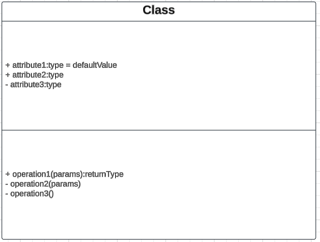

Introduction au Langage UML
Objectif
L’objectif de cette introduction est de comprendre les bases du langage UML (Unified Modeling Language), son rôle dans le développement logiciel, et les concepts fondamentaux qu’il introduit. UML est un langage de modélisation visuel qui permet de représenter les différents aspects d’un système logiciel, de la conception à l’implémentation.
Pourquoi utiliser UML ?
-
Standardisation :
- UML est un standard international largement adopté dans l’industrie pour modéliser les systèmes logiciels.
- Il favorise une compréhension commune entre les parties prenantes.
-
Communication :
- UML sert de support visuel pour faciliter la communication entre développeurs, analystes, designers et clients.
-
Documentation :
- Il fournit une documentation précise des systèmes, essentielle pour la maintenance et l’évolution des logiciels.
-
Planification et conception :
- UML aide à structurer et à planifier le développement logiciel en identifiant les composants, interactions, et flux de données.
Composantes principales d’UML
1. Les Diagrammes UML
UML se compose de 14 types de diagrammes répartis en deux grandes catégories :
- Diagrammes structurels : Illustrent la structure statique du système.
- Diagrammes comportementaux : Illustrent la dynamique et les interactions dans le système.
| Catégorie | Types de diagrammes |
|---|---|
| Structurels | Diagramme de classes, Diagramme de composants, Diagramme d’objets, Diagramme de déploiement, Diagramme de structure composite, Diagramme de paquets |
| Comportementaux | Diagramme de cas d'utilisation, Diagramme de séquence, Diagramme d'activités, Diagramme de collaboration, Diagramme d'état, Diagramme de synchronisation, etc. |
2. Concepts clés
- Acteurs : Entités externes qui interagissent avec le système.
- Objets : Instances des classes représentant des entités du système.
- Relations : Liens entre les différents éléments UML, comme les associations, généralisations ou dépendances.
- Messages : Échanges entre objets ou composants.
3. Notations standardisées
UML utilise des symboles graphiques spécifiques pour représenter les concepts :
- Rectangles : Classes ou composants.
- Ellipses : Cas d'utilisation.
- Lignes : Relations entre éléments.
- Flèches : Flux de contrôle, dépendances ou hiérarchies.
Méthodologie UML
-
Analyse des exigences :
- Identifier les besoins et les attentes des utilisateurs.
- Utiliser des diagrammes comme les diagrammes de cas d'utilisation pour modéliser ces exigences.
-
Conception du système :
- Élaborer les diagrammes structurels pour définir les composants et leurs relations.
- Utiliser des diagrammes comportementaux pour représenter les interactions et les processus.
-
Implémentation :
- Traduire les modèles UML en code source tout en respectant la structure et les interactions définies.
-
Documentation et maintenance :
- Les modèles UML servent de référence pour documenter le système et faciliter sa mise à jour.
Avantages d’UML
- Clarté : Représentation visuelle et standardisée des systèmes.
- Flexibilité : Adapté à différents types de projets, qu’ils soient petits ou complexes.
- Intégration : Peut être utilisé avec de nombreuses méthodologies de développement (Agile, Scrum, Waterfall).
- Interopérabilité : Supporté par une large gamme d’outils de modélisation.
Résumé
UML est un langage de modélisation universel et puissant, essentiel pour concevoir, comprendre et documenter des systèmes logiciels. Grâce à ses diagrammes variés et standardisés, UML favorise une collaboration efficace et facilite le développement de logiciels robustes et évolutifs.
Quiz
Diagrammes de cas d'utilisation
Objectif
Les diagrammes de cas d'utilisation sont des outils en UML qui permettent de modéliser les interactions entre un système et ses acteurs. Ils servent à capturer les exigences fonctionnelles d'un système et offrent une vue d'ensemble des fonctionnalités principales, favorisant une communication claire entre les parties prenantes.
Cas principaux d’utilisation
-
Visualisation des interactions système-utilisateur :
- Identifier les rôles des acteurs et les fonctionnalités auxquelles ils accèdent.
- Représenter graphiquement les actions clés offertes par le système.
-
Capturer les exigences fonctionnelles :
- Décrire les fonctionnalités du système de manière structurée.
- Fournir un cadre pour explorer les besoins des utilisateurs et des parties prenantes.
-
Faciliter la communication :
- Offrir un support visuel pour que toutes les parties prenantes (clients, développeurs, utilisateurs) partagent une compréhension commune.
-
Base pour la conception et les tests :
- Servir de point de départ pour élaborer des scénarios de test et des diagrammes plus détaillés (diagrammes de séquence, diagrammes d'activités).
Composants principaux
1. Système
- Définition :
Le système est l'entité étudiée ou développée. Il est représenté par un rectangle qui englobe les cas d'utilisation. - Rôle :
Il délimite le périmètre fonctionnel et clarifie ce qui est inclus dans l’analyse.
2. Acteurs
- Définition :
Un acteur est une entité externe qui interagit avec le système pour atteindre un objectif. Il peut être un utilisateur humain, un autre système ou un dispositif. - Classification :
- Acteur primaire : Initie les interactions avec le système pour accomplir une tâche spécifique.
- Acteur secondaire : Fournit un soutien ou des services au système en réponse à des requêtes.
3. Cas d’utilisation
- Définition :
Un cas d’utilisation décrit une action ou une séquence d'actions que le système effectue pour produire un résultat observable et de valeur pour un acteur. - Caractéristiques d’un bon cas d’utilisation :
- Clair et compréhensible.
- Focalisé sur un objectif précis.
4. Relations entre composants
- Association :
Représente une interaction directe entre un acteur et un cas d’utilisation. - Inclure (Include) :
Indique qu’un cas d’utilisation intègre systématiquement le comportement d’un autre cas d’utilisation. - Étendre (Extend) :
Décrit une variation optionnelle ou conditionnelle d’un cas d’utilisation. - Généralisation :
Représente une relation hiérarchique entre des cas d'utilisation ou entre des acteurs.
Structure et présentation d’un diagramme de cas d’utilisation
-
Délimitation du système :
- Représenter le système à l’aide d’un rectangle nommé.
-
Identification des acteurs :
- Ajouter les acteurs autour du système sous forme de stickmen
- Les acteurs primaires sont ajoutés à gauche du système
- Les acteurs secondaires sont ajoutés à droite du système
-
Définition des cas d’utilisation :
- Ajouter les cas d’utilisation sous forme d’ellipses à l’intérieur du rectangle du système.
-
Établissement des relations :
- Relier les acteurs aux cas d’utilisation avec des lignes simples (association).
- Définir les relations spécifiques comme
<<include>>,<<extend>>, ou des relations de généralisation si nécessaire.
Résumé
Les diagrammes de cas d'utilisation sont une méthode essentielle pour modéliser les interactions entre un système et ses utilisateurs. Ils permettent de capturer les exigences fonctionnelles de manière claire et concise, et constituent une base solide pour d'autres étapes de conception et de développement.
Exemple Concret : Gestion d'une Application Bancaire
Description du contexte :
Une application bancaire permet aux clients de gérer leurs comptes, effectuer des transactions, consulter leurs soldes, et interagir avec des conseillers. Les utilisateurs principaux sont les clients de la banque et les administrateurs du système.
Acteurs principaux :
- Client : Utilisateur principal qui accède à l'application pour gérer ses comptes.
- Administrateur du système : Responsable de la maintenance et de la gestion des données de l'application.
- Banque : Système externe intégré (exemple : passerelle pour les paiements en ligne).
Cas d'utilisation principaux :
- Se connecter : Permet au client d'accéder à l'application après authentification.
- Consulter le solde : Le client peut vérifier le solde de ses comptes.
- Effectuer un virement : Permet de transférer de l'argent entre deux comptes.
- Payer une facture : Option pour régler des factures directement via l'application.
- Contacter un conseiller : Le client peut échanger avec un conseiller par chat ou message.
- Gérer les profils utilisateurs : L'administrateur peut ajouter ou supprimer des comptes clients.
- Vérifier les transactions suspectes : L'administrateur analyse les activités inhabituelles.
Relations entre acteurs et cas d'utilisation :
- Client :
- Est associé aux cas d'utilisation suivants :
- Se connecter
- Consulter le solde
- Effectuer un virement
- Payer une facture
- Contacter un conseiller
- Est associé aux cas d'utilisation suivants :
- Administrateur du système :
- Est associé aux cas d'utilisation suivants :
- Gérer les profils utilisateurs
- Vérifier les transactions suspectes
- Est associé aux cas d'utilisation suivants :
- Banque (système externe) :
- Interagit avec :
- Effectuer un virement
- Payer une facture
- Interagit avec :
Relations spécifiques entre cas d'utilisation :
- Le cas d'utilisation Se connecter est une condition préalable pour Consulter le solde, Effectuer un virement, et Payer une facture.
- Contacter un conseiller peut être une extension en cas d’échec ou d’erreur lors d’un virement ou d’un paiement.
Description des relations UML :
- Association : Relie les acteurs aux cas d’utilisation (exemple : le client est associé au cas "Se connecter").
- Include : Le cas d’utilisation Se connecter est inclus dans tous les cas nécessitant une authentification.
- Extend : Le cas Contacter un conseiller étend les cas Effectuer un virement et Payer une facture pour gérer les erreurs.
Exemple de diagramme textuel (pour le représenter graphiquement) :
-
Acteurs :
- Client
- Administrateur du système
- Banque (système externe)
-
Cas d’utilisation :
- Se connecter
- Consulter le solde
- Effectuer un virement
- Payer une facture
- Contacter un conseiller
- Gérer les profils utilisateurs
- Vérifier les transactions suspectes
-
Relations entre acteurs et cas :
- Client —> (Se connecter, Consulter le solde, Effectuer un virement, Payer une facture, Contacter un conseiller)
- Administrateur du système —> (Gérer les profils utilisateurs, Vérifier les transactions suspectes)
- Banque (système externe) <—> (Effectuer un virement, Payer une facture)
-
Spécifications supplémentaires :
- Include : Se connecter est inclus dans tous les cas où une authentification est nécessaire.
- Extend : Contacter un conseiller étend Effectuer un virement et Payer une facture.
Quiz
Exercices
Système de Gestion de Bibliothèque
Contexte du système
Une bibliothèque municipale souhaite mettre en place un système informatique permettant de gérer les prêts de livres, les réservations, ainsi que les inscriptions des membres.
Description des fonctionnalités
-
Consultation du catalogue :
- Tout visiteur (membre ou non-membre) peut consulter le catalogue des livres disponibles, sans avoir besoin de s’identifier.
-
Prêt de livres :
- Seuls les membres inscrits peuvent emprunter des livres.
- La bibliothèque limite le nombre d’emprunts actifs à 5 livres par membre.
-
Retour de livres :
- Les membres peuvent retourner leurs livres à tout moment.
-
Réservation de livres :
- Si un livre est déjà emprunté, les membres peuvent le réserver.
- Une notification est envoyée au membre dès que le livre est disponible.
-
Inscription de nouveaux membres :
- Un visiteur peut s’inscrire comme membre en fournissant ses informations personnelles.
- L’inscription est validée par un administrateur de la bibliothèque.
-
Gestion des livres :
- Les administrateurs peuvent ajouter de nouveaux livres au catalogue, supprimer des livres ou mettre à jour leurs informations.
-
Gestion des membres :
- Les administrateurs peuvent consulter la liste des membres, suspendre un membre en cas de problème (ex. : non-retour de livres), ou modifier leurs informations.
Instructions pour réaliser le diagramme
- Identifie les acteurs principaux (ex. : visiteur, membre, administrateur).
- Définis les cas d’utilisation correspondants aux fonctionnalités décrites.
- Modélise les relations entre les acteurs et les cas d’utilisation (associations, généralisations si nécessaire).
- Si pertinent, inclue des relations entre cas d’utilisation (ex. : « inclure » ou « étendre »).
Diagrammes de Classes
Objectif
Les diagrammes de classes sont des outils fondamentaux en UML qui permettent de modéliser la structure statique d’un système. Ils représentent les classes, leurs attributs, méthodes, et relations, offrant une vue d’ensemble des éléments constitutifs d’un système logiciel.
Cas principaux d’utilisation
-
Représenter la structure statique d’un système :
- Montrer les classes, leurs propriétés, leurs méthodes, et leurs associations.
-
Faciliter la conception orientée objet :
- Identifier les objets, leurs responsabilités et leurs relations.
-
Documenter les relations entre classes :
- Fournir une vue claire des dépendances, généralisations, et associations dans le système.
-
Base pour le développement et la maintenance :
- Guider l’implémentation en traduisant les diagrammes en code source.
- Servir de référence pour la maintenance et l’évolution du système.
Composants principaux
1. Classes
-
Définition :
Une classe est une entité abstraite qui définit les propriétés (attributs) et comportements (méthodes) communs à un groupe d’objets. -
Notation UML :
Représentée par un rectangle divisé en trois parties :- Nom de la classe (en haut).
- Attributs (au milieu).
- Méthodes (en bas).
Exemple de notation

Visibilités
- Public (+) : Accessible partout.
- Privé (-) : Accessible uniquement dans la classe.
- Protégé (#) : Accessible dans la classe et ses sous-classes.
2. Relations entre classes
a. Association
- Définition :
Une relation où une classe utilise ou connaît une autre. - Notation UML :
Une ligne simple entre deux classes. - Multiciplité :
Indique combien d’instances d’une classe peuvent être associées à une autre (ex. 1..* pour une ou plusieurs instances).
| Multiplicité | Signification | Exemple d'usage |
|---|---|---|
1 | Exactement une instance est associée | Une personne a exactement un passeport. |
0..1 | Une instance est optionnelle | Un employé peut avoir aucun ou un bureau. |
* ou 0..* | Une instance peut être associée à zéro ou plusieurs | Un professeur peut enseigner à aucun ou plusieurs étudiants. |
1..* | Une instance est associée à au moins une instance | Une commande doit contenir au moins un produit. |
n | Exactement n instances sont associées | Un hexagone a exactement 6 côtés. |
n..m | Entre n et m instances sont associées | Une équipe doit avoir entre 3 et 11 joueurs. |
b. Aggregation
- Définition :
Une relation "partie-tout" où les parties peuvent exister indépendamment du tout. - Notation UML :
Une ligne avec un losange vide du côté du tout.
c. Composition
- Définition :
Une relation "partie-tout" forte où les parties ne peuvent exister sans le tout. - Notation UML :
Une ligne avec un losange plein du côté du tout.
d. Héritage (Généralisation)
- Définition :
Une relation hiérarchique où une classe hérite des propriétés et comportements d’une classe parent. - Notation UML :
Une flèche avec un triangle vide pointant vers la classe parent.
e. Dépendance
- Définition :
Une relation faible où une classe dépend de l’existence d’une autre pour fonctionner. - Notation UML :
Une flèche pointillée entre deux classes.
f. Interface
- Définition :
Une classe abstraite contenant uniquement des méthodes sans implémentation, définissant un comportement attendu. - Notation UML :
Représentée par un rectangle avec le mot-clé<<interface>>.
3. Attributs
- Définition :
Propriétés ou variables définies dans une classe. - Caractéristiques :
- Ont un nom, un type de données, et parfois une valeur par défaut.
- Peuvent être publics, privés, ou protégés.
4. Méthodes
- Définition :
Comportements ou fonctions que peut exécuter une classe. - Caractéristiques :
- Ont un nom, des paramètres, et un type de retour.
- Peuvent être abstraites (définies mais non implémentées) ou concrètes.
Structure et présentation d’un diagramme de classes
-
Identification des classes :
- Identifier les entités principales du système à modéliser.
-
Définition des attributs et méthodes :
- Ajouter les propriétés et comportements pertinents pour chaque classe.
-
Définition des relations :
- Identifier et tracer les relations pertinentes entre les classes (ex. associations, héritages, compositions).
-
Ajout des multiplicité et visibilités :
- Spécifier les règles de multiplicité et les niveaux de visibilité applicables.
Résumé
Les diagrammes de classes sont un pilier de la modélisation orientée objet. Ils offrent une vue d’ensemble claire et structurée des classes, de leurs propriétés et comportements, et des relations qui les lient. Ces diagrammes constituent une base essentielle pour concevoir, développer et maintenir des systèmes logiciels robustes.
Exemple Concret : Gestion d'un Store en Ligne
Description du contexte :
Un store en ligne permet aux clients de parcourir les produits, passer des commandes, gérer leur compte, et consulter l'historique de leurs achats. Les administrateurs peuvent gérer les produits et traiter les commandes.
Classes principales :
-
Utilisateur
- Attributs :
idUtilisateur : int- Identifiant unique pour chaque utilisateur.nom : String- Nom de l'utilisateur.email : String- Adresse e-mail de l'utilisateur.motDePasse : String- Mot de passe de l'utilisateur.
- Méthodes :
seConnecter() : bool- Permet à l'utilisateur de se connecter.mettreAJourProfil() : void- Met à jour les informations personnelles.
- Attributs :
-
Client (hérite de Utilisateur)
- Attributs :
adresse : String- Adresse de livraison du client.panier : Panier- Panier en cours d'utilisation.
- Méthodes :
ajouterProduitPanier(produit : Produit) : void- Ajoute un produit au panier.passerCommande() : Commande- Valide le panier et crée une commande.
- Attributs :
-
Administrateur (hérite de Utilisateur)
- Attributs :
role : String- Rôle ou permissions spécifiques.
- Méthodes :
ajouterProduit(produit : Produit) : void- Ajoute un produit au store.supprimerProduit(idProduit : int) : void- Supprime un produit.
- Attributs :
-
Produit
- Attributs :
idProduit : int- Identifiant unique du produit.nom : String- Nom du produit.prix : double- Prix du produit.quantiteEnStock : int- Quantité disponible.
- Méthodes :
mettreAJourStock(qte : int) : void- Met à jour la quantité en stock.
- Attributs :
-
Panier
- Attributs :
idPanier : int- Identifiant unique du panier.produits : List<Produit>- Liste des produits dans le panier.
- Méthodes :
calculerTotal() : double- Calcule le total des articles dans le panier.
- Attributs :
-
Commande
- Attributs :
idCommande : int- Identifiant unique de la commande.produits : List<Produit>- Liste des produits commandés.total : double- Montant total de la commande.statut : String- Statut actuel de la commande (ex. "En cours", "Expédiée").
- Méthodes :
mettreAJourStatut(statut : String) : void- Modifie le statut de la commande.
- Attributs :
Relations UML :
-
Héritage :
- Client et Administrateur héritent de la classe Utilisateur.
-
Association :
- Client est associé à Panier (relation 1:1).
- Client est associé à Commande (relation 1:N).
- Produit est associé à Panier (relation N:N).
- Produit est associé à Commande (relation N:N).
-
Cardinalités :
- Un Client peut avoir plusieurs Commandes, mais un Panier unique.
- Un Panier peut contenir plusieurs Produits.
- Une Commande inclut plusieurs Produits.
-
Dépendance :
- Administrateur dépend de Produit pour ajouter ou supprimer des articles du store.
Exemple de diagramme textuel (pour le représenter graphiquement) :
-
Classes et attributs :
- Utilisateur
- idUtilisateur : int
- nom : String
- email : String
- motDePasse : String
- Client (hérite de Utilisateur)
- adresse : String
- panier : Panier
- Administrateur (hérite de Utilisateur)
- role : String
- Produit
- idProduit : int
- nom : String
- prix : double
- quantiteEnStock : int
- Panier
- idPanier : int
- produits : List
- Commande
- idCommande : int
- produits : List
- total : double
- statut : String
- Utilisateur
-
Relations :
- Utilisateur <|-- Client
- Utilisateur <|-- Administrateur
- Client --> Panier (1:1)
- Client --> Commande (1:N)
- Produit --> Panier (N:N)
- Produit --> Commande (N:N)
Quiz
Exercice
Système de Gestion de Restaurant
Contexte du système
Un restaurant souhaite mettre en place un système informatique pour gérer les menus, les commandes des clients, les tables disponibles, et les employés.
Description des besoins
-
Menu :
- Un menu est composé de plusieurs plats. Chaque plat a un nom, une description, un prix et une catégorie (entrée, plat principal, dessert).
- Les menus sont modifiables par les responsables du restaurant.
-
Table :
- Une table a un numéro unique et un nombre de places disponibles.
- Une table peut être libre ou occupée.
- Les réservations peuvent être associées à une table.
-
Commande :
- Une commande est passée par un client. Elle peut contenir plusieurs plats.
- Chaque commande a un statut (en attente, en préparation, servie, payée).
- Une commande est associée à une table occupée.
-
Client :
- Un client peut passer des commandes et réserver une table.
- Les informations d’un client incluent son nom et son numéro de téléphone.
-
Employé :
- Un employé a un identifiant unique, un nom, et un rôle (serveur, cuisinier, responsable).
- Les serveurs sont associés aux tables pour la gestion des commandes.
Instructions pour réaliser le diagramme
- Identifie les classes principales à partir des éléments décrits (ex. : Menu, Table, Commande, etc.).
- Modélise les attributs nécessaires pour chaque classe (ex. : numéro de table, statut de commande).
- Décris les relations entre les classes (ex. : une commande est associée à une table, un menu contient plusieurs plats).
- Ajoute les multiplicités aux relations pour indiquer combien d’instances d’une classe peuvent être liées à une autre (ex. : une commande peut contenir plusieurs plats).
- Si nécessaire, inclue des associations spéciales comme l’héritage (ex. : un employé peut être spécialisé en serveur ou en cuisinier).